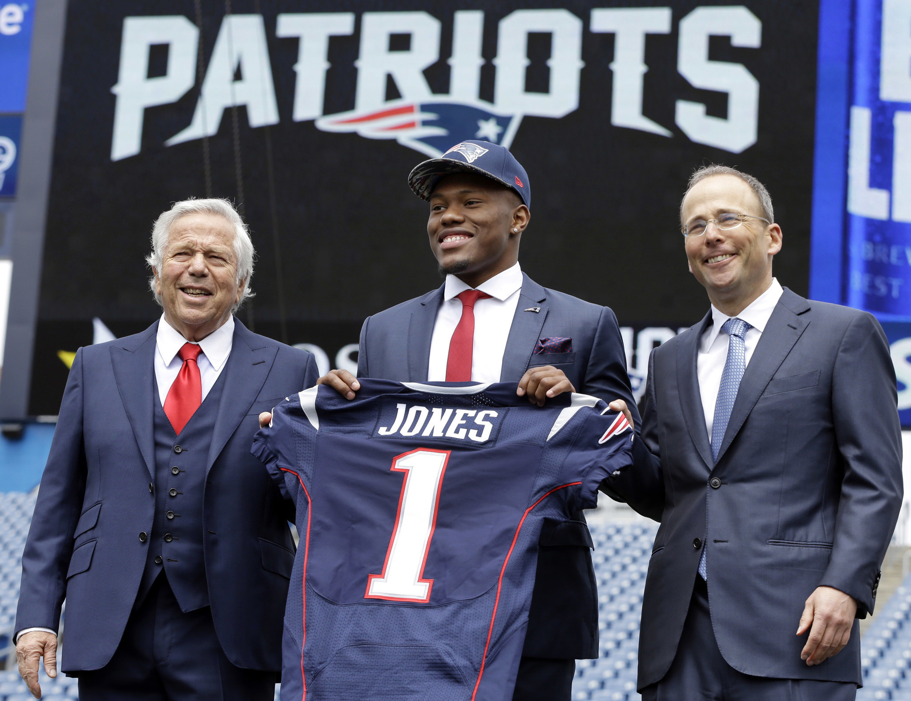

Schedule
Results
DRAFT PICKS
Jones, 22, was selected by the Patriots in the second round of the 2016 NFL Draft with the 60th overall selection out of Alabama. The 5-foot-10, 197-pounder, began his career at Alabama as a wide receiver before moving to cornerback as a sophomore in 2013. He played in 51 games and totaled 108 tackles, one sack, seven interceptions four fumbles and two fumble recoveries. Jones also was utilized as a punt returner, fielding 46 punts for 618 yards and a single-season school record four touchdowns in 2015.
Thuney, 23, was selected by the Patriots in the third round of the 2016 NFL Draft with the 78th overall selection out of North Carolina State. The 6-foot-5, 295-pounder, was a three-year starter, who saw action at left tackle, left guard, right tackle and right guard during his career.
Valentine, 22, was selected by the Patriots in the third round of the 2016 NFL Draft with the 96th overall selection out of Nebraska. The 6-foot-3, 320-pounder, was a mainstay on the defensive line for three seasons, playing in 36 games with 24 starts and finishing with 78 total tackles and seven sacks.
Mitchell, 22, was selected by the Patriots in the fourth round of the 2016 NFL Draft with the 112th overall selection out of Georgia. The 6-foot-1, 195-pounder, played in 47 games with 35 starts over five years and finished third in school history with 174 receptions for 2,351 yards and 16 touchdowns.
Grugier-Hill, 21, was selected by the Patriots in the sixth round of the 2016 NFL Draft with the 208th overall selection out of Eastern Illinois. The 6-foot-2, 215-pounder, played in 49 games at linebacker over his four-year career and earned first team Ohio Valley Conference honors as a junior and a senior.
Roberts, 22, was selected by the Patriots in the sixth round of the 2016 NFL Draft with the 214th overall selection out of Houston. The 6-foot, 235-pounder, played in 34 games during his three-year career at Houston and finished with 175 total tackles, seven sacks and one interception, two forced fumbles and five passes defensed. He started his career at Morgan State for one season before transferring to Houston.
Karras, 23, was selected by the Patriots in the sixth round of the 2016 NFL Draft with the 221st overall selection out of Illinois. The 6-foot-4, 307-pounder, made 43 career starts along the offensive line at Illinois. He was a two-time All-Big Ten honoree.
Lucien, 22, was selected by the Patriots in the seventh round of the 2016 NFL Draft with the 225th overall selection out of Arizona State. The 6-foot-2, 195-pounder, played in 45 games with 20 starts during his college career and recorded 124 receptions for 1,827 yards and 12 touchdowns during his three seasons at UCLA and one season at Arizona State. Lucien was a graduate transfer out of UCLA, who played with Arizona State for his final season.
Most promising draft pick of 2016
SEASON
The 2016 New England Patriots season was the franchise's 47th season in the National Football league, the 57th overall and the 17th under head coach Bill Belichick.
During the season, the New England Patriots became the first team that originated from the American Football League to reach 500 franchise wins—regular season and playoffs—with their Week 12 win over the New York Jets. In Week 15, the Patriots clinched their eighth straight AFC East division title, and in doing so surpassed the 1979 Los Angeles Rams for most consecutive division titles. With their Week 17 win over the Miami Dolphins, the Patriots clinched home field advantage throughout the entire AFC playoffs and ended the regular season with a league-best record of 14–2. With their win over the Houston Texans in the Divisional Round, the Patriots advanced to the AFC Championship Game for the sixth consecutive year, surpassing the 1977 Oakland Raiders for most consecutive appearances in conference championship games. After their win over the Pittsburgh Steelers in the AFC Championship Game, the Patriots became the first organization to clinch a ninth Super Bowl berth. They surpassed the Pittsburgh Steelers, Dallas Cowboys, and Denver Broncos who are all tied at 8. Furthermore, Bill Belichick broke the record for a head coach by coaching his seventh Super Bowl, breaking a tie with Don Shula.
Patriots starting quarterback Tom Brady was suspended for the first four games of the season due to his alleged role in the Deflategate scandal. Under backup quarterbacks Jimmy Garoppolo and Jacoby Brissett, the team went 3–1 during Brady's suspension. During the season, Bill Belichick moved into fourth place on the list for most wins as a head coach, and Brady set the record for most wins by a starting quarterback (208 following the Super Bowl win).The Patriots were 8–0 on the road, matching a feat they first accomplished in the 2007 season; they are the seventh NFL team to accomplish this feat.
The Patriots set a record for the most pass attempts by a team without an interception to start a season, and, collectively, Garoppolo, Brissett, and Brady combined to set a single season record for fewest interceptions thrown by a team, with just 2. Tom Brady also set the record for the best touchdown–interception ratio in a single season, with 28 touchdowns and 2 interceptions (a 14:1 ratio), breaking Nick Foles's mark of 27 touchdowns to 2 interceptions (13.5:1), set in 2013 while he was with the Philadelphia Eagles. Meanwhile, the defense led the league for fewest points allowed (250) for the first time since the 2003 season.
In Super Bowl LI, the Patriots rallied from a 28–3 deficit – with 2:07 left in the third quarter – to win in overtime, with a score of 34–28. This would be the franchise's fifth Super Bowl title. Super Bowl LI was the first Super Bowl to be decided in overtime. This would also be a record fifth Super Bowl victory for the Brady–Belichick combo. For Tom Brady, this would be his fifth. With the Super Bowl win, he broke his tie with hall of fame quarterbacks Joe Montana and Terry Bradshaw who both have four wins each. Moreover, head coach Bill Belichick's fifth Super Bowl meant he surpassed Hall of Fame coach Chuck Noll (4) for most wins in the Super Bowl by a head coach.
Two-time Pro Bowl linebacker and 2008 AP NFL Defensive Rookie of the Year Jerod Mayo announced his retirement in February 2016. Linebacker Dane Fletcher also retired. In March, the Patriots released wide receiver Brandon LaFell and tight end Scott Chandler. The Patriots subsequently traded Pro Bowl defensive end Chandler Jones to the Arizona Cardinals in exchange for guard Jonathan Cooper and a 2016 second-round draft pick. Days later the Patriots acquired tight end Martellus Bennett from the Chicago Bears via trade. On September 7, the Patriots gained cornerback Eric Rowe in a trade that involved the Patriots giving the Philadelphia Eagles a conditional draft pick in the 2018 NFL Draft. On October 26, 2016, the Patriots traded a 2017 seventh-round draft pick to the Detroit Lions and acquired linebacker Kyle Van Noy. And in the process, released offensive guard Chase Farris, who would later be signed to their practice squad. Furthermore, during the month of October, the Patriots traded linebacker Jamie Collins to the Cleveland Browns for a 2017 third round draft pick. Additionally, the Patriots signed wide receiver Michael Floyd on December 15, 2016 after he was released by the Arizona Cardinals because of his DUI incident.